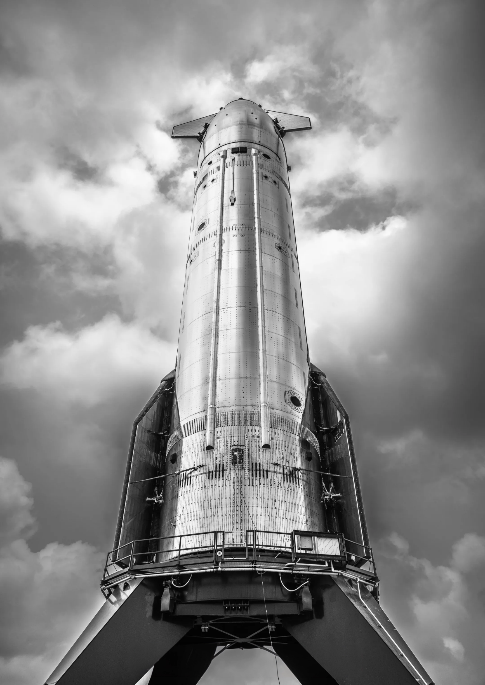
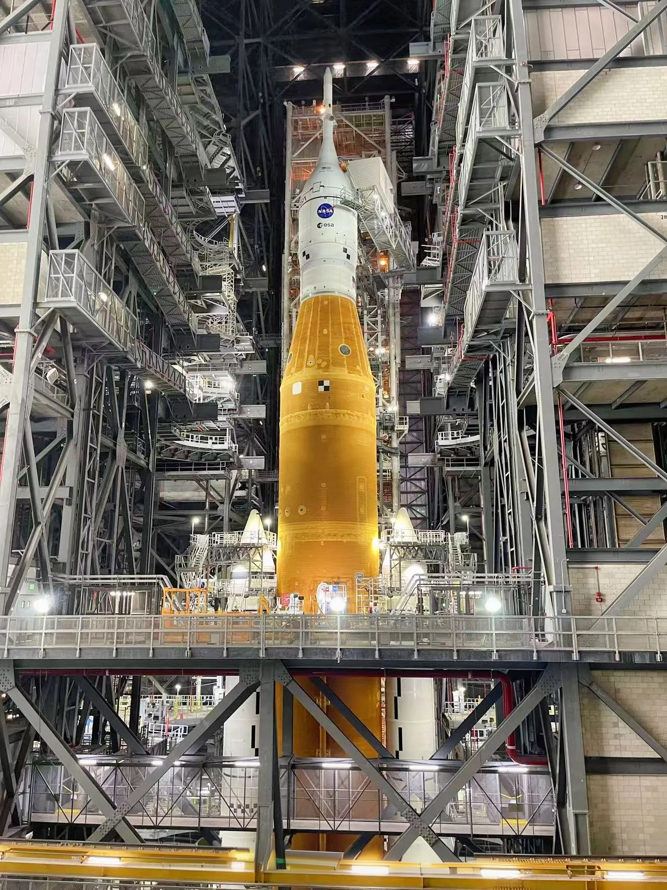
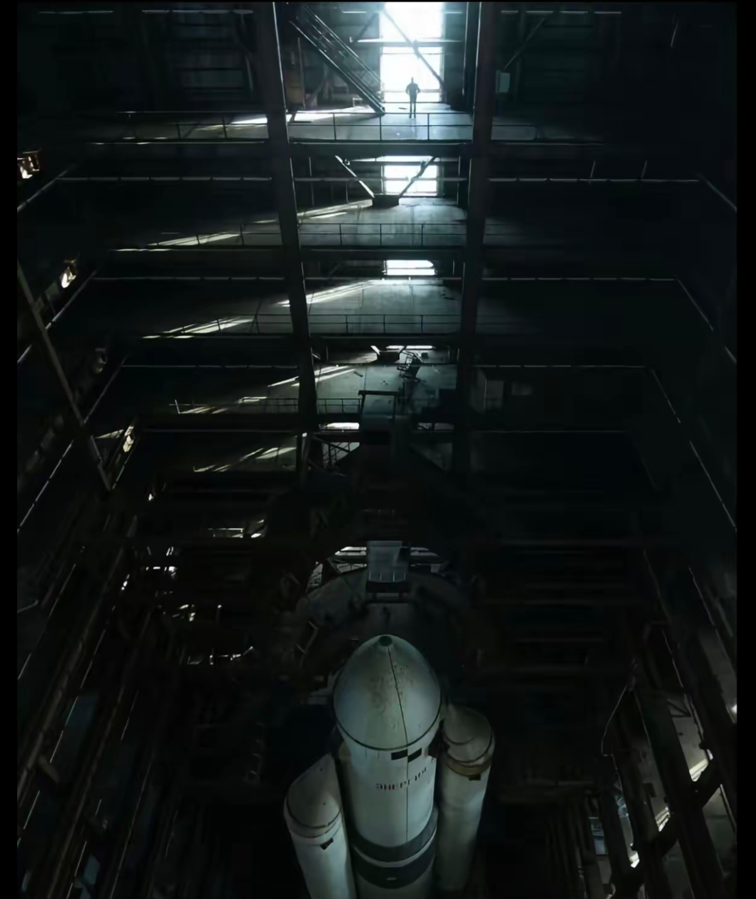
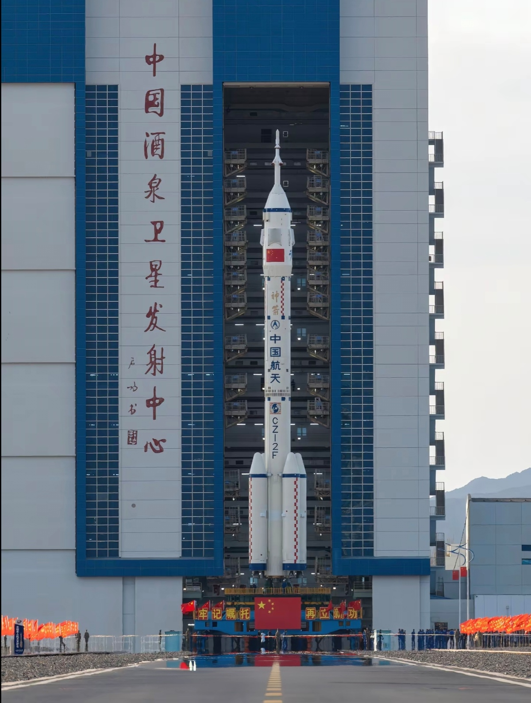
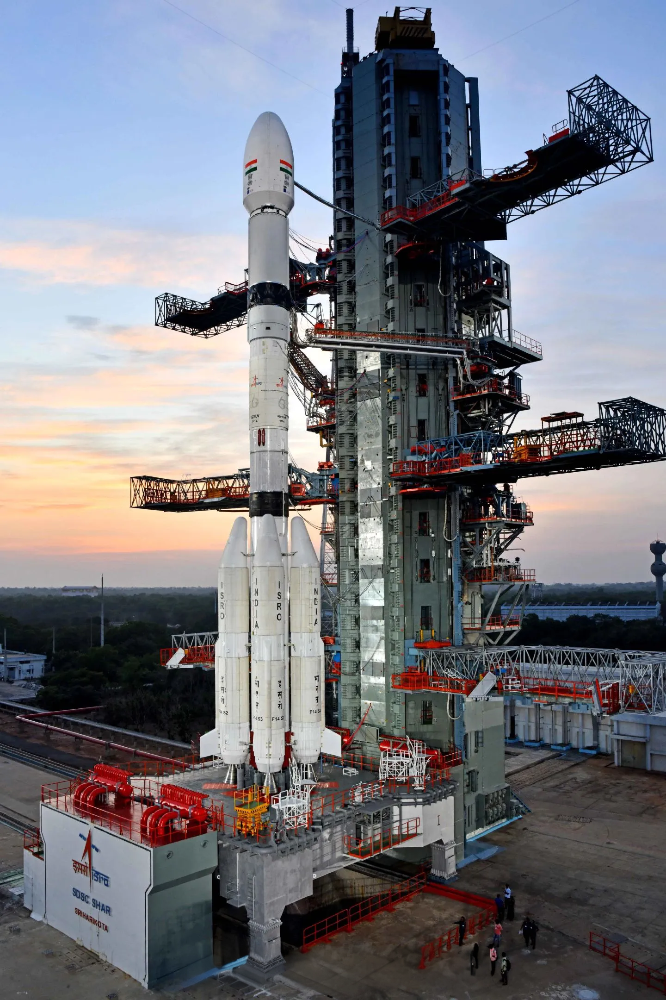

发射中心
通往太空的大门
航天发射中心是人类进行航天发射活动的基地，是连接地球与太空的重要门户。这些发射场通常位于人口稀少、地势开阔的地区，考虑了安全性、气候条件和地理优势等因素。从早期的简易发射场到现代化的综合航天港，发射中心见证了人类航天事业的发展历程。
世界各主要航天国家都建立了自己的发射中心，如美国的肯尼迪航天中心、俄罗斯的拜科努尔航天中心、中国的酒泉卫星发射中心等。这些发射中心不仅承担着本国航天发射任务，也越来越多地参与国际合作，共同推动人类探索太空的步伐。


肯尼迪航天中心
位于美国佛罗里达州，是美国国家航空航天局(NASA)的主要发射基地，曾执行阿波罗登月计划和航天飞机任务，现用于商业和政府发射。
关键信息
- 建立时间：1962年
- 著名发射台：39A和39B发射台
- 主要任务：载人航天、深空探测
- 历史成就：阿波罗11号登月发射地

拜科努尔航天中心
位于哈萨克斯坦，是世界第一座航天发射场，由苏联建造并运营，现由俄罗斯租赁。人类第一颗人造卫星和第一位宇航员均从这里发射。
关键信息
- 建立时间：1955年
- 著名发射台：加加林发射台
- 主要任务：载人航天、卫星发射
- 历史成就：尤里·加加林首次太空飞行

酒泉卫星发射中心
位于中国甘肃省，是中国创建最早、规模最大的综合型导弹、卫星发射中心，承担了中国载人航天工程的大部分发射任务。
关键信息
- 建立时间：1958年
- 著名发射台：921发射台
- 主要任务：载人航天、卫星发射
- 历史成就：神舟系列飞船发射地

库鲁航天中心
位于法属圭亚那，是欧洲航天局(ESA)和法国国家空间研究中心(CNES)的主要发射基地，因其靠近赤道，具有节省燃料的优势。
关键信息
- 建立时间：1964年
- 著名火箭：阿丽亚娜系列火箭
- 主要任务：商业卫星发射、科学任务
- 地理优势：纬度低，地球自转速度大

种子岛宇宙中心
位于日本鹿儿岛县种子岛，是日本最大的航天发射中心，由日本宇宙航空研究开发机构(JAXA)运营，负责发射H-IIA和H-IIB等火箭。
关键信息
- 建立时间：1969年
- 著名火箭：H-IIA、H-IIB火箭
- 主要任务：卫星发射、国际空间站补给
- 特色：发射场面向太平洋，确保安全

萨迪什·达万航天中心
位于印度安得拉邦斯里赫里戈达岛，是印度空间研究组织(ISRO)的主要发射基地，曾成功发射月船1号和火星轨道器任务。
关键信息
- 建立时间：1971年
- 著名火箭：极轨卫星运载火箭(PSLV)
- 主要任务：卫星发射、深空探测
- 成就：低成本高效益的航天发射
未来展望
未来展望
海上发射平台
海上发射平台可以在全球最优位置进行发射，提高发射效率，降低成本，同时减少对地面环境的影响。
太空港
未来将建设专门的太空港，不仅用于发射，还将支持航天器的维护、加注和回收，实现太空活动的常态化。
私人发射场
随着商业航天的发展，越来越多的私人企业将建设自己的发射场，促进航天产业的多元化和创新。